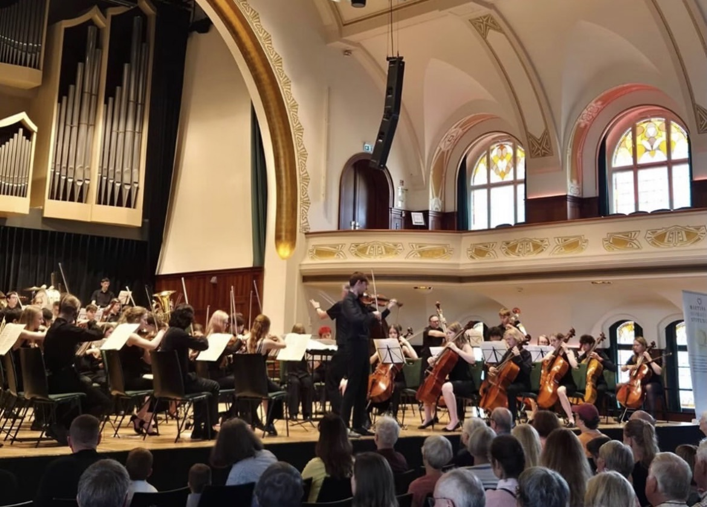
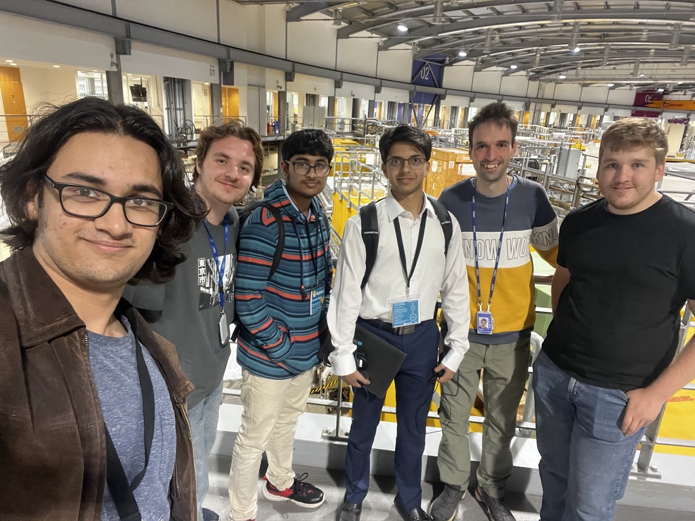

Seth Sharma
Hello, I'm Seth Sharma, a student at Marling Sixth Form!
This is my website for employer
information and all of my Personal Projects and activities.
This website is still a work in progress so please do report any bugs.
In the nav bar you can find my CV, contact information and a
list of links to my projects.
Feel free to reach out to me if you have any questions or would
like to discuss potential opportunities!
Recent Activities

Last year in November we played Kilar's Orawa in the royal albert hall, and now in
August 2026 my Gloucestershire Music Orchestras went on tour in Leipzig where
we played famous pieces including Chicago, How to Train Your Dragon
and Eine Kleine. This was a rare opportunity to experience foreign
musical culture and perform in an international setting, especially
getting to visit the Mendelssohn House and Bach Museum. Playing next to Bach's grave was particularly
meaningful due to his influence of the genre. Overall I have gained
a greater appreciation for the performance and history of music
and it has inspired me to pursure music further once I go to university.

In July 2026 I took part in a work experience opportunity with
Diamond Light Source, the largest particle accelerator in
the UK. This was an eye opening opportunity to see the
application of concepts learned in Physics and Computer
Science implemented into real programming and scientific
research, and additionally to have the opportunity to
explore inside the booster and storage rings. In this work
experience I learned about beam dynamics and how to fine
tune the strength of the quadrupoles (focusing magnets) to
keep a beam of electrons contained. After this work
experience, I am interested in pursuing a computer science
job in the academic or research fields.
Upcoming...